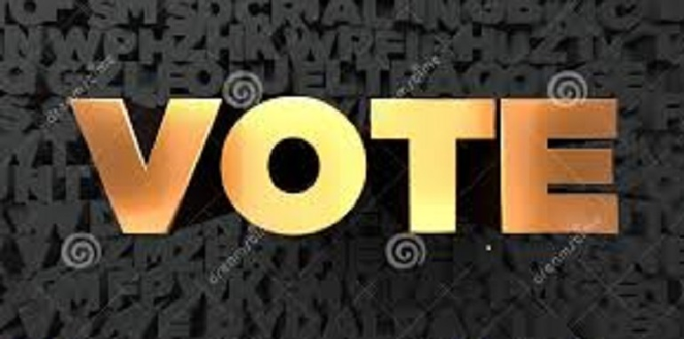

-
E-VOTING IMPORTANCE
Electronic voting (also known as e-voting or EVM) refers to voting using electronic means to either aid or take care of the chores of casting and counting votes.Depending on the particular implementation, e-voting may use standalone electronic machines (also called EVM) or computers connected to the internet. It encompasses a range of Internet services, from basic data transmission to full-function online voting through common connectable household devices. Similarly, the degree of automation may vary from simple chores to a complete solution that includes voter registration & authentication, vote input, local or precinct tallying, vote data encryption and transmission to servers, vote consolidation and tabulation, and election administration. A worthy e-voting system must perform most of these tasks while complying with a set of standards established by regulatory bodies, and must also be capable to deal successfully with strong requirements associated with security, accuracy, integrity, swiftness, privacy, auditability, accessibility, cost-effectiveness, scalability and ecological sustainability.
-
REGISTRATION
Voter registration is the fundamental task that creates the environment of free, fair and credible election system. Election Commission has accomplished different local and national level elections which were not out of controversy. It is remarkable that good governance is only possible after free, fair and credible election system and free, fair and credible election system can be ensured after clean and clear voter registration system. Every citizen need to be aware and educated for proper registration and this is the rights of every citizens to be better informed, capacitated and aware. A single effort of Election Commission cannot be enough to bring all eligible voters into mainstream and all civil societies, government organizations, non government organizations and concerned stakeholders must pay their attention to make initiative of Election Commission more successful. there is also required registration of candidate.
-
VOTE
Voting is a method for a group, such as, a meeting or an electorate to make a decision or express an opinion, usually following discussions, debates or election campaigns. Democracies elect holders of high office by voting. Residents of a place represented by an elected official are called "constituents", and those constituents who cast a ballot for their chosen candidate are called "voters". There are different systems for collecting votes.